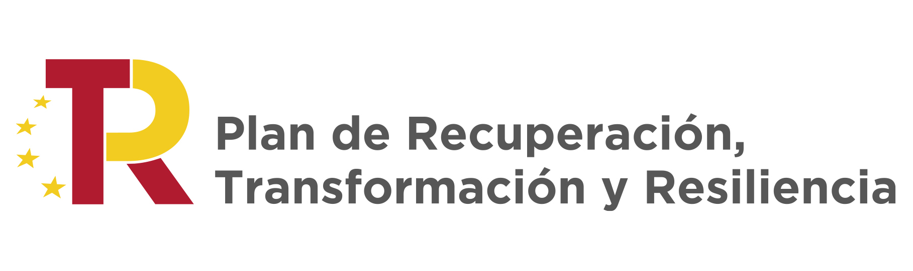

CIARRES: Cybersecurity and Artificial Intelligence for a more resilient Smart GridSobre el proyecto Publicaciones
Resumen y objetivos del proyectoEl suministro eléctrico es un servicio esencial y estratégico, y por lo tanto una infraestructura crítica que debe protegerse adecuadamente. La incorporación de las TIC en las nuevas redes eléctricas inteligentes (Smart Grids) permite el control en tiempo real del suministro eléctrico, facilita la integración de nuevos elementos como la generación distribuida y los vehículos eléctricos y aporta mejoras en la gestión de la demanda. A su vez, la exposición de la Smart Grid en el ciberespacio abre un espectro de nuevas amenazas, y son numerosos los incidentes reportados en redes eléctricas debido a la acción de ciberataques que suponen una interrupción del servicio esencial para la sociedad y la economía. El proyecto CIARRES tiene como objetivo principal mejorar el nivel de resiliencia y la robustez de las Smart Grids ante ciberataques, diseñando mecanismos de prevención, detección y mitigación que consideran las capacidades actuales de los adversarios. Para ello, se abordan tres objetivos diferenciados.
Contribuciones y publicacionesTODO  |